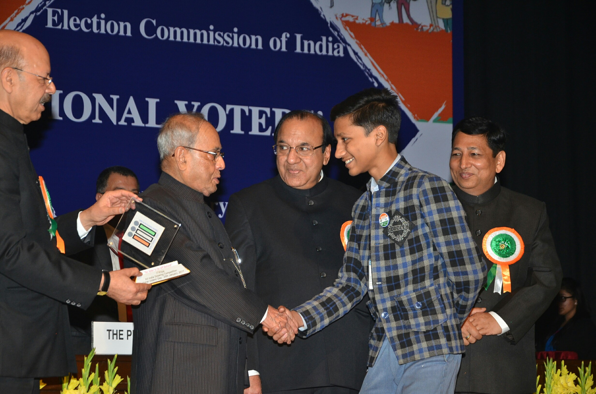

Hey there..! üëã I am Aneesh, someone who loves to code and explore various technologies..
I live in New Delhi, India and am currently a somophore, pursuing Bachelor's in Technology in Computer Science & Engineering from Netaji Subhas University of Technology üè´, Delhi..

Hobbies
Since my childhood, I have been into various co-curricular activities as in Painting, Sketching, Roller Skating, Dancing and much more!!.. Perhaps, I was in First-Standard at school when I made my first attempt in a school-level painting competition.. Who knew, this would make me fall in love with the exciting world of art üòä ..
-
Painting
Being a winner in the competition boosted my confidence and gave me the motivation to improve my skills in this domain and I am thankful üôèto my parents, mentors who guided me and made me capable to win various School-Level, State-Level, National-Level and International-Level painting competitions throughout my school journey..
I was fortunate enough to meet various dignities including Ministers of Ministry of Water, Women and Child Development, Power and much more..
My passion for art even gave me a precious opportunity to meet H'ble Ex-President of India, Late Shri Pranab Mukherjee..
-
Here is some of my work..

-
Roller Skating
I was always fond of games, (specially the racing ones !! üèéÔ∏è) and wondered if I could too glide through the winds!! This is where I stepped into the world of Roller Skating..
This field not only fulfilled my desire but also instilled the qualities of sportsmanship within me, and prepared me to win lots of Roller Skating Championships as well.. I was fortunte enough to be Delhi State Roller Skates Champion award during my school life..
Academics
-
Though, I was hyper-active in all the co-curricular activities, I always assured NOT to compromise with my academics.. üòå During school, I was always among the top 3 rankers in each standard, participated in various inter-school as well as inter-state quiz, debate competitions and much more..
\
-
I was the only student in my school who got the title of "STUDENT OF THE YEAR" consecutively for 2 years..
-
Computers, software, building tech etc.. was always a point of attraction for me and I always wanted to deep dive into the world of computers.. Now, to graduate from my dream engineering college (NSUT), I had to score well in "Joint Entrance Examination Mains", (JEE Mains - It's the Largest National level Engineering Entrance Exam conducted in India).. and with the support of my parents and teachers, I was able to score 99.6 percentile at JEE Mains 2021..
College Life!
-
Healthy and Competitive environment of NSUT motivated me to build a tech stack from the very first day of college.. I started with App Development, and the journey from learning to teaching Android has been really exciting for me!!
-
I organized various Android Bootcamps on topics such as Jetpack Compose, Flutter and much more at my university..
-
Here's the session on Flutter which I recently organized -> Flutter Forwarded Session.. Would be really happy if it could help my fellow peers to start up with Flutter..
-
Here's an introductory session on Android Development which I took up under DevWeek'23 -> Android Introductory Session.. Would be really happy if it could help my fellow peers to start up with Android..
-
-
Besides this, it's always important to have good knowledge on Data Structures and Algorithms.. I was fortunate enough to take up sessions on the same and got to mentor lots of students..
-
Here's a session on Binary Trees which I recently organized -> Binary Trees Session.. Would be really happy if it could help my fellow peers to understand the basics of Binary Trees..
-
-
Societies and Students Interest Clubs are something which always attracted me and I always volunteer actively in the same.. Developing this set of skills made me grab the Leadership position in one of the most renowned societies of NSUT - Google Developer Students Clubs (GDSC)..
-
Apart from App Development, I always wanted to develop my skill set in Web Development.. Here's where I got to know about Udacity Front End Development Scholarship, which is really helping me to achieve these skills as well!! :)
-
Though, I always focus on developing a good skill set, I never compromise with the college studies.. I managed to be the UNIVERSITY TOPPER at NSUT by grabbing 10.0 CGPA (Cumulative Grade Point Average)..
That's all about me!!